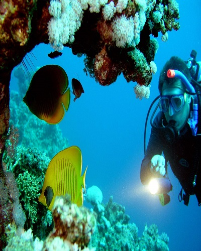

The best time to come to Agonda beach is from November to March.Read More
Agonda beach
Anjuna Beach
The ideal time to step into the Anjuna Beach in Goa is during the winters and springs.Read More
Anjuna Beach
Arambol Beach
The best time to visit Arambol beach is in the months October till February basically during winter season when climate in Goa is pleasant and its temperature lies between 20 degree celcius to 25 degree celcius respectively. The timings to visit Arambol beach (Goa) is from morning 6 am till evening 6 pm.Read More
Arambol Beach
Baga Beach
The best time to visit Baga Beach is from October through March.Read More
Baga Beach
Basilica of Bom jesus
Best Time: September and March.Opening Schedule: Sunday: 10.00 to 18.30hrs.Read More
Basilica of Bom jesus
Butterfly Beach
The best time to visit Butterfly Beach in Goa is between November and March. During these months, the temperatures are pleasant and there isn't much of rainfall.Read More
Butterfly Beach
Chapora Fort
Best Time to Visit : November to FebruaryRead More
Chapora Fort
Church of our lady of the immaculate conception
As a tourist, you could also go for a visit between 10:00 am to 12:30 pm (Sundays between 11:00 am to 12:30 pm) or in the afternoons between 03:00 pm to 05:30 pm.Read More
Church of our lady of the immaculate conception
Colva Beach
The best time to visit Colva Beach is between October to March as the weather remains delightful, perfect for enjoying the stunning outdoors.Read More
Colva Beach
Cruise
If you want to avoid crowds, cruise in early May or late August. April, September, and early January.Read More
Cruise
Divar Island
A must visit place in Goa to have a Best Experience.It is Better to go on Sat/or Sunday morning to avoid rush and traffic.Read More
Divar Island

Scuba Diving
The best time to visit for scuba diving in Goa is from mid October to mid May, generally after monsoon.Read More